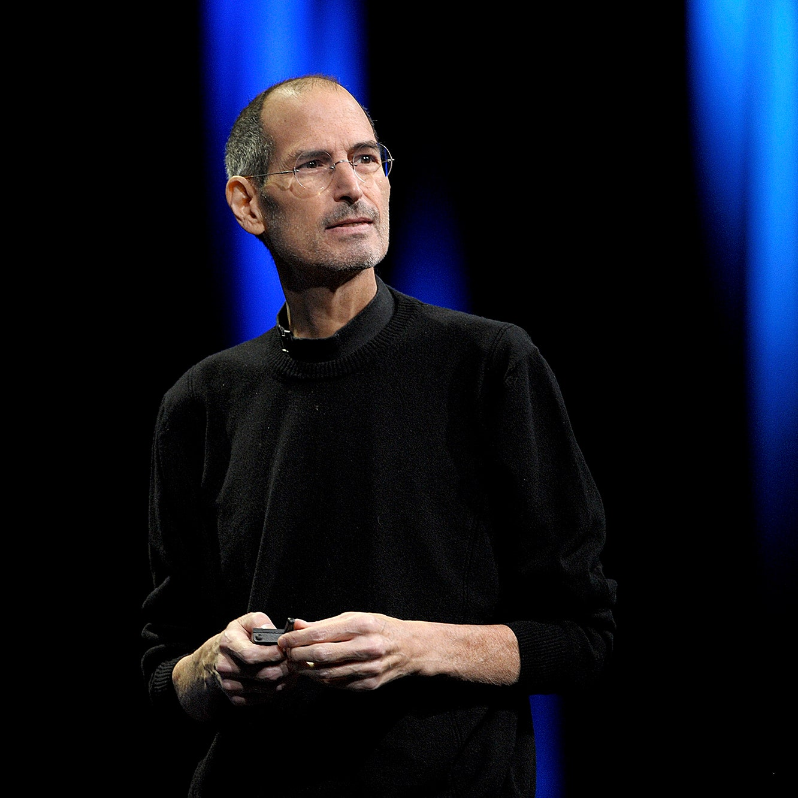

Hello! I am Prabhpreet from Northern California. I have a Bachelors in Software Engineering and after few years of coding my life away, I decided to get in to what I really love; UX and UI Design. I have always admired doing design work since I was like ten years old. Whether it was creating logos or banners for events, I always enjoyed doing this. After my education and working in the coding world, it became more evident that I was meant for design!
My Inspirations

Steve Jobs
Steve Jobs is one my biggest inspirations and motivations for the way he thought UI and UX to be. I believe that the only reason Apple was able to perform so well in the industry where everyone loved a Microsoft was the UI and UX.
Gary Simon
Gary Simon runs a YouTube channel called DesignCourse. Throughout my design journey, I watched his videos to learn about design and technologies such as Adobe XD, Photoshop, Illustrator, etc.
Skillset
I am skilled in various softwares and toolsets. For UX and UI Design I am capable of doing work in Adobe XD, Figma, Sketch, etc. I have been using Adobe Photoshop and the creative cloud for the past ten years as well.
I also run a succesful photography and video business that uses my skills from Adobe Premiere, Lightroom, Illustrator and Photoshop etc.
Having a bachelors in Software Engineering, I am also aware of many technologies that go into building applications after the design process. I have previously worked in the UI and Front End Development phase as well. HTML, CSS, Javascript are also some of the coding languages I am very familiar with.
Apart from my professional background, I love everything about the creation process. From research, planning, design and production: I admire the process of turning something to real life; whether it's woodworking or a website!

Our Promise
Whether it’s a small event or a huge wedding, we want to make sure that our clients enjoy their special moments with their families while being able to cherish them for years to come. Our team makes sure to deliver High grade and Professional content for our clients, so they can look back at their memories and remember them forever.
We are more than capable of delivering however a client may ask. From digital delivery to actual prints and albums, our team is skilled to work on any demands of the client and deliver a beautiful piece of art.